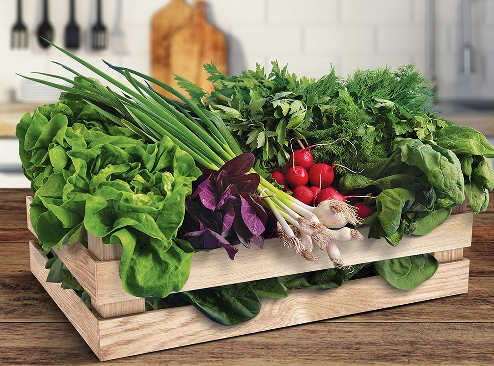
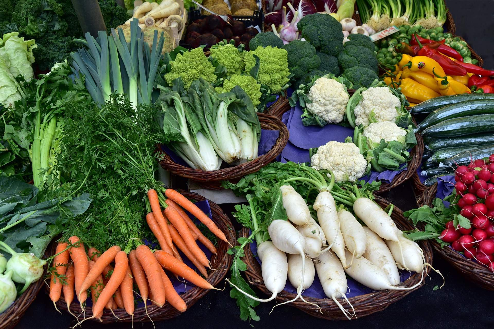

Despre Noi
Suntem o familie formată din 2 generații, părinți și copii, care și-au dorit întotdeauna să aibă în farfurie, pe cât posibil, fructe și legume bio. De la această dorință a noastră a apărut și ideea “Lădiței cu Legume”. Oferim fructe și legume de sezon, la calitate superioară, crescute în serele noastre din comuna Afumați, fără a fi tratate cu chimicale și pesticide ce pot afecta integritatea produselor.
Oferta Noastră
În funcție de sezon, punem la dispoziția dumneavoastră o lădiță cu legumele pe care le avem disponibile în seră. Conținutul lădiței poate varia de la o săptămână la alta, aceasta va fi postată în fiecare zi de miercuri pe pagina noastră de Instagram.
Vă prezentăm 3 variante de lădițe disponibile în perioada următoare:
Varianta 1 – “Lădița verde” – 100 lei
3 salate verzi, 3 legături ceapă verde, 3 legături ridichi roșii, 2 legături ceapă roșie, 2 legături lobodă, 2 legături pătrunjel, 2 legături mărar, 2 legături leuștean
Varianta 2 – “Lădița mix legume” – 145 lei
2 kg roșii, 1 kg castraveți, 2 salate, 2 legături ceapă verde, 2 legături ridichi roșii, 1 kg ardei galben, 1 kg ardei roșu, 4 căpățâni usturoi, o varză albă/varză roșie/varză China
Varianta 3 – “Lădița cu fructe” – 130 lei
1 kg mix mere, 500 g pere, 500 g caise, 500 g piersici, 500 g nectarine, 500 g cireșe, 700 g mix de nuci în coajă

Imaginile sunt cu titlu informativ iar conținutul lădiței poate să difere în funcție de disponibilitate. Pentru a afla ce bunătăți conțin lădițele noastre, vă așteptăm în fiecare miercuri pe pagina noastră de Instagram